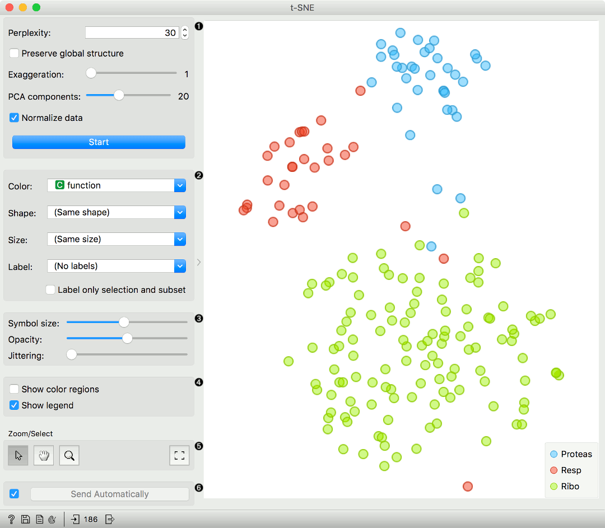
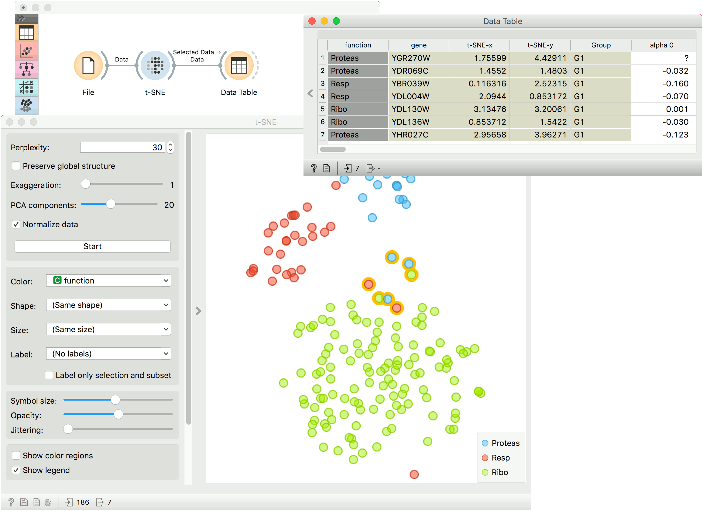
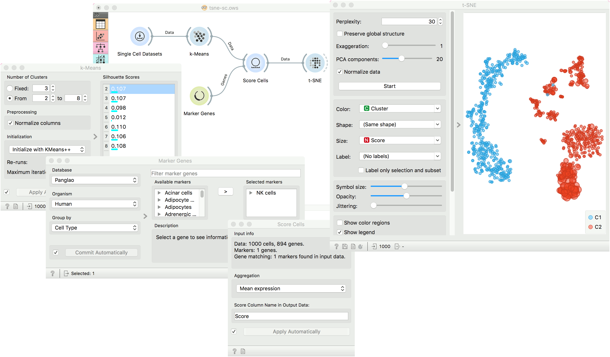

t-SNE
Two-dimensional data projection with t-SNE.
Inputs
- Data: input dataset
- Data Subset: subset of instances
Outputs
- Selected Data: instances selected from the plot
- Data: data with an additional column showing whether a point is selected
The t-SNE widget plots the data with a t-distributed stochastic neighbor embedding method. t-SNE is a dimensionality reduction technique, similar to MDS, where points are mapped to 2-D space by their probability distribution.

- Parameters for plot optimization:
- measure of perplexity. Roughly speaking, it can be interpreted as the number of nearest neighbors to distances will be preserved from each point. Using smaller values can reveal small, local clusters, while using large values tends to reveal the broader, global relationships between data points.
- Preserve global structure: this option will combine two different perplexity values (50 and 500) to try preserve both the local and global structure.
- Exaggeration: this parameter increases the attractive forces between points, and can directly be used to control the compactness of clusters. Increasing exaggeration may also better highlight the global structure of the data. t-SNE with exaggeration set to 4 is roughly equal to UMAP.
- PCA components: in Orange, we always run t-SNE on the principal components of the input data. This parameter controls the number of principal components to use when calculating distances between data points.
- Normalize data: We can apply standardization before running PCA. Standardization normalizes each column by subtracting the column mean and dividing by the standard deviation.
- Press Start to (re-)run the optimization.
- Set the color of the displayed points. Set shape, size and label to differentiate between points. If Label only selection and subset is ticked, only selected and/or highlighted points will be labelled.
- Set symbol size and opacity for all data points. Set jittering to randomly disperse data points.
- Show color regions colors the graph by class, while Show legend displays a legend on the right. Click and drag the legend to move it.
- Select, zoom, pan and zoom to fit are the options for exploring the graph. The manual selection of data instances works as an angular/square selection tool. Double click to move the projection. Scroll in or out for zoom.
- If Send selected automatically is ticked, changes are communicated automatically. Alternatively, press Send Selected.
Preprocessing
t-SNE uses default preprocessing if necessary. It executes it in the following order:
- continuizes categorical variables (with one feature per value)
- imputes missing values with mean values
To override default preprocessing, preprocess the data beforehand with Preprocess widget.
Examples
The first example is a simple t-SNE plot of brown-selected data set. Load brown-selected with the File widget. Then connect t-SNE to it. The widget will show a 2D map of yeast samples, where samples with similar gene expression profiles will be close together. Select the region, where the gene function is mixed and inspect it in a Data Table.

For the second example, use Single Cell Datasets widget from the Single Cell add-on to load Bone marrow mononuclear cells with AML (sample) data. Then pass it through k-Means and select 2 clusters from Silhouette Scores. Ok, it looks like there might be two distinct clusters here.
But can we find subpopulations in these cells? Select a few marker genes with the Marker Genes widget, for example natural killer cells (NK cells). Pass the marker genes and k-Means results to Score Cells widget. Finally, add t-SNE to visualize the results.
In t-SNE, use Cluster attribute to color the points and Score attribute to set their size. We see that killer cells are nicely clustered together and that t-SNE indeed found subpopulations.
